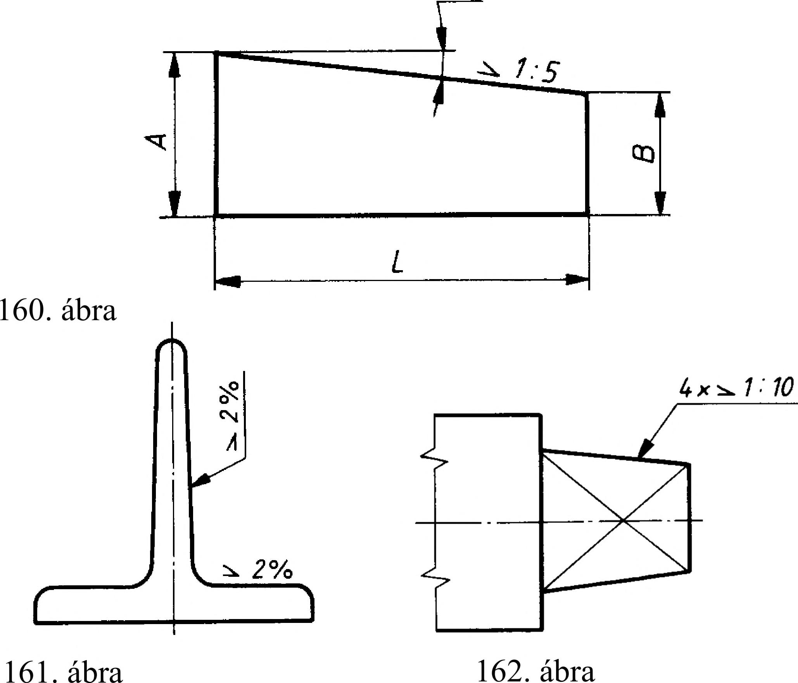

8. Mérethálózat 8.2. Lejtés és a kúposság jelölése Adott ferde síknak egy ún. alapsíkhoz viszonyított hajlását lejtésnek nevezzük. A lejtés méretszáma a ferde sík és az alapsík által bezárt szög tangense. Ezt a rajzon aránnyal (1 : x) vagy százalékban (y %) fejezzük ki. A méretszám előtti ( Z ) jel csúcsa a lejtés irányába mutasson. A lejtést a 160. ábra szerint értelmezzük. A-B 1 A lejtés = - = — =1 : x L x A-B Lejtés % - 100 % = y % Számadatokkal, ha A=20; B=10; L=50 20-10 1 a lejtés = - = — =1 : 5 50 5 20-10 százalékosan - 100 % = 20 % 50 annak még A lejtést a lejtős felületet ábrázoló vonalon vagy meghosszabbításán adjuk meg. Megadhatjuk mutató vonalon is (161. ábra). Négyzetes gúla adatait oldalaik lejtésével is megadhatjuk (162. ábra). A kúposság a forgáskúp -felületű test két zárófelületének átmérője közötti különbség, viszonyítva az átmérők közötti távolsághoz. Ez a rajzon aránnyal vagy százalékosan fejezhető ki (163. ábra) A kúposság = százalékosan D-d 1 L D-d — = 1 : x x 100% = y% ill. számadatokkal, ha D = 3 1 ; d = 26; L = 40 A kúposság = százalékosan 31-26 1 40 31-26 40 — = 1:8 8 100% = 12,5% A kúposság értékét a kúposság irányát mutató jellel (>) és a mellé írt aránnyal vagy százalékosan adjuk meg a kúp középvonala fölött vagy azzal párhuzamos segédvonalon. A jel csúcsa a kúp csúcsának irányába mutat (164. ábra). A kúpalkotó és a kúp tengelye által bezárt szög tangense a kúpalkotó - tengelyhez viszonyítva - lejtése fele a kúposságnak. Ha szükséges - pl. ha több kúpfelület középvonala egybeesik -, a kúposság mutatóvonalon is megadható (165. ábra). a ' 01:15 _ >1:15 164. ábra >1:15 165. ábra 42
